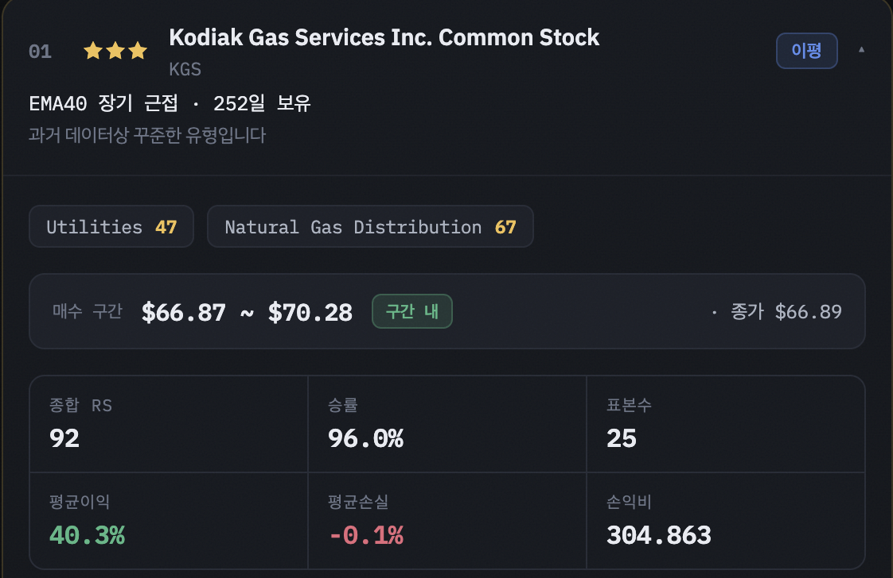
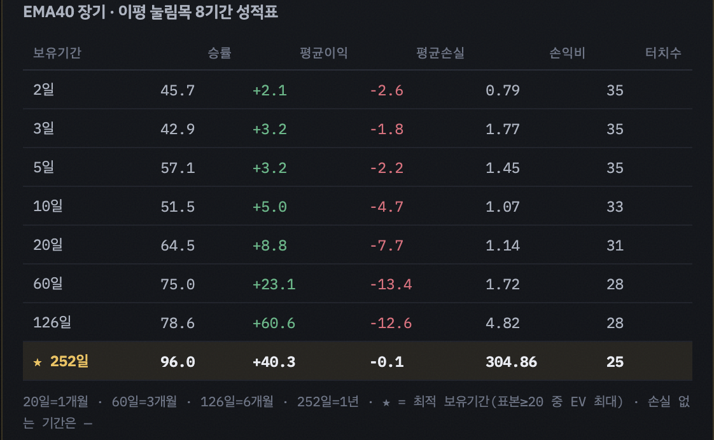

과거 데이터상 꾸준한 유형입니다
국가
자산
신호
시총
조건에 맞는 종목이 없습니다.
이 화면, 어떻게 읽나요?
처음 보면 숫자가 많아 어렵게 느껴지지만, 규칙은 딱 하나입니다. "강한 종목이 살 만한 자리에 왔을 때, 과거에 똑같이 샀다면 어땠는지"를 보여줄 뿐입니다. 이 페이지만 읽으면 목록 화면의 모든 숫자를 이해할 수 있어요.
STEP 이 사이트가 하는 일 3단계
1
강한 종목만 거른다
시장에서 가장 강하게 오른 상위 10% 종목만 후보로 삼습니다. 이 "얼마나 강한가"를 0~100으로 매긴 점수가 상대강도(RS)이고, RS 90 이상만 통과합니다.
2
'살 만한 자리'일 때만 올린다
강한 종목이라도 아무 때나 사는 게 아닙니다. 정해진 매수 구간 (예: 이동평균선 근처, 박스 돌파 직후)에 지금 현재가가 들어와 있는 종목만 목록에 나옵니다.
3
과거 성적으로 증명한다
과거에 같은 신호가 났던 모든 날 샀다고 가정하고, 며칠 뒤 팔았을 때 몇 %가 수익이었는지(승률) 계산해 붙입니다. 이게 카드 속 성적표입니다.
A 목록 화면을 위에서 아래로
상단 배너
시장별로 데이터 기준일과 상태가 칩으로 표시됩니다.
최신=장 마감 후 최신 데이터, 장중=지금 장이 열려 있어
오늘치가 아직 안 들어옴(직전 완결일 기준), 지연=데이터가 며칠째
갱신되지 않음. 붉은색이면 참고만 하세요.
필터 칩 4종
국가(한국/미국) · 자산(주식/ETF) · 신호(이평/박스/신고가) ·
시총(≥$1B~≥$1T). 누르면 즉시 걸러집니다. 여러 개를 동시에 걸 수 있어요.
정렬 4종
별 우선(기본) · EV순 · 승률순 · RS순.
기본값 '별 우선'은 별점이 높은 종목을 위로, 같으면 기대값(EV)이 큰 순서로 놓습니다.
"N종목" 숫자
필터·정렬을 마친 뒤 상위 100개까지만 카드로 보여줍니다. 그 개수 표시입니다.
B 카드 한 장(접힌 상태) 읽기
카드는 왼쪽부터 이렇게 읽습니다.
순번 · 별점
정렬 순위와 별점입니다. ★★★ = 위험 요인 없음,
★★ = 가벼운 과열 신호 있음,
★ = "대형주 무리한 급등" 위험. ETF는 별점이 없습니다.
신호 배지
무엇을 근거로 뽑혔는지입니다.
이평 이동평균선까지 눌린 자리 ·
박스 횡보 박스권 상단 돌파 ·
신고가 신고가 돌파.
한 줄 문구
"EMA40 장기 근접 · 252일 보유" 처럼 신호 종류와
가장 성적이 좋았던 보유기간을 요약해 줍니다.
C 카드를 펼치면 — 요약부
카드를 클릭하면(또는 오른쪽 ▾ 화살표) 아래처럼 펼쳐지며 상세 성적표가 나옵니다. 실제 사이트에서 Kodiak Gas Services(KGS) 카드를 펼친 화면이고, 숫자마다 번호를 붙였어요.

1 2 3 4 5 6 7 8 9 10 11- 순번 — 현재 정렬 기준의 순위.
- 별점 — ★★★(위험 없음) / ★★(가벼운 과열) / ★(대형주 급등 위험).
- 종목명 — 회사 이름. (미국은 영문, 한국은 한글)
- 티커 — 종목 코드. ETF는 여기에 카테고리도 붙습니다.
- 신호 배지 — 매수 근거(이평/박스/신고가).
- 한 줄 문구 — 신호 + 최적 보유기간 요약.
- 섹터·산업 RS 칩 — 이 종목이 속한 업종의 평균 강도(0~100). Utilities 47 = 유틸리티 업종 평균 RS 47.
- 매수 구간 — 지금 사도 되는 가격대. 이 안이면 후보에 오릅니다.
- 구간 내 배지 — 현재가가 매수 구간 안에 있다는 표시(초록).
- 종가 — 데이터 기준일의 마지막 가격.
- 핵심 지표 6칸 — 아래 6개가 한 눈에: 종합 RS(강도) · 승률(과거 이겼던 비율) · 표본수(과거 신호 횟수) · 평균이익 · 평균손실 · 손익비(이익÷손실).
D 8기간 성적표 읽기
같은 카드를 더 내리면 나오는 표입니다. "이 신호로 산 뒤 며칠 들고 있었는지"에 따라 성적이 어떻게 달라지는지 8가지 기간을 한꺼번에 비교합니다.

1 2 3 4 5 6- 표 제목 — 어떤 신호의 성적표인지(EMA40 장기 이평 눌림목).
- 6개 열 — 보유기간 / 승률 / 평균이익 / 평균손실 / 손익비 / 표본수. (표본 열 이름은 신호별로 터치수·돌파수·표본수로 달라집니다)
- 각 기간 행 — 예: 60일 행은 "사서 60거래일 뒤 팔았을 때"의 성적. 길게 들수록 이익도 손실도 커지는 게 보입니다.
- ★ 최적 보유기간(노란 강조) — 8기간 중 기대값(EV)이 가장 높은 기간. 카드 위쪽 요약 숫자는 바로 이 행의 값입니다. 여기선 252일(=1년).
- 손익비가 클 때 주의 — 여기 304.86은 평균손실이 -0.1%로 거의 0에 가까워 나눗셈 값이 커진 것. 숫자 크기만 보지 말고 반드시 표본수와 함께 판단하세요.
- 주석 — 20·60·126·252일을 개월/년으로 환산. 손실이 한 번도 없던 기간은 평균손실·손익비가 —로 표시되고, 이 기간은 최적 기간 후보에서 제외됩니다(값을 계산할 수 없으므로).
E 핵심 용어 사전
- 상대강도 (RS, 0~100)
- 최근 3·6·9·12개월 수익률을 종합해 같은 시장 안에서 몇 등인지를 백분위로 매긴 점수. RS 90 = 시장 상위 10%. 이 사이트는 RS 90 이상만 다룹니다.
- 신호 3종
- 이평 = 상승 종목이 이동평균선까지 눌렸을 때 · 박스 = 오래 횡보하던 박스권 위를 뚫을 때 · 신고가 = 최근(또는 역대) 최고가를 돌파할 때.
- 매수 구간
- 지금 사도 되는 가격 범위. 이평은 "이평선 −2%~+3%", 박스·신고가는 "돌파선 ~ +5%". 현재가가 이 안에 있는 종목만 목록에 나옵니다.
- 승률 · 평균이익 · 평균손실
- 과거 같은 신호로 샀다 팔았을 때 이긴 거래 비율, 이긴 거래의 평균 수익, 진 거래의 평균 손실(음수).
- 손익비
- 평균이익 ÷ |평균손실|. 높을수록 "한 번 이길 때 크게, 질 때 작게" 벌었다는 뜻. 단, 손실이 0에 가까우면 값이 비정상적으로 커지니 표본수와 함께 보세요.
- 표본수
- 과거에 이 신호가 몇 번 나왔는지. 이 사이트는 20회 이상만 신뢰해 목록에 올립니다. 표본이 적으면 우연일 수 있습니다.
- 최적 보유기간 · EV(기대값)
- 8기간 중 기대값이 가장 높은 기간. EV는 "한 번 거래로 평균 몇 배를 기대하는가"를 손실 크기로 나눈 값(R배수)입니다. 카드 요약 숫자는 이 기간 기준입니다.
- 별점
- 기본 ★★★에서 위험 신호(과열·윗꼬리·변동성 최상위, 대형주 급등)가 있으면 강등됩니다. 감점 사유는 펼친 카드가 아니라 데이터의 cut_reason에 기록됩니다.
F 실전: KGS 카드를 문장으로 풀면
KGS는 시장 상위권(RS 92)의 강한 종목이고, 지금 EMA40 이동평균선 근처 ($66.87~$70.28)까지 눌린 상태입니다(종가 $66.89 — 구간 내). 과거 이 자리에서 샀다면 1년(252일) 보유 시 25번 중 96%가 수익, 평균 +40.3%였습니다. ★★★은 과열·급등 같은 위험 감점 요인이 없다는 뜻입니다.
G 신호 3종은 각각 어떤 전략인가
카드에 붙은 이평 박스 신고가 는 단순한 분류가 아니라 서로 다른 매수 전략입니다. 같은 종목이라도 어떤 전략으로 잡혔느냐에 따라 사는 자리와 근거가 다릅니다.
세 전략의 공통점
셋 다 "강한 종목을 먼저 고르고, 그다음 살 자리를 기다린다"는 순서입니다.
RS 90 이상(시장 상위 10%)을 통과한 종목만 후보가 되므로,
싸졌다고 약한 종목을 줍는 전략은 하나도 없습니다.
파는 시점도 셋 다 같은 방식입니다 — 감이 아니라
백테스트가 뽑은 최적 보유기간만큼 들고 있다가 파는 기계적 규칙입니다.
한 종목에 여러 전략이 걸리면
한 종목이 동시에 여러 전략의 조건을 만족하는 일은 흔합니다(예: 신고가를 뚫으면서
단기 이평선에도 붙어 있는 경우). 이때 카드에는 과거 기대값(EV)이 가장 좋았던 전략
하나만 표시됩니다. 그러니 "이평"이라고 적혀 있어도 그 종목에 다른 신호가
없었다는 뜻은 아닙니다 — 가장 성적이 좋았던 근거가 그거였다는 뜻입니다.
이평 눌림목 — 오르던 종목이 잠깐 쉴 때 산다
노리는 상황
추세가 살아 있는 종목은 쭉 오르기만 하지 않고 이동평균선까지 눌렸다가 다시 오르는
움직임을 반복합니다. 이 전략은 오른 뒤를 쫓아가지 않고, 눌린 자리에서 삽니다.
매수 조건
종가가 이동평균선의 −2%~+3% 안에 들어왔을 때. 다만 그냥 떨어진 걸 잡으면
안 되므로 추세가 살아 있다는 조건을 같이 겁니다:
· 장기(L) — 종가가 SMA200 위 그리고 SMA50이 SMA200 위
· 단기(S) — 종가가 SMA50 위
· 장기(L) — 종가가 SMA200 위 그리고 SMA50이 SMA200 위
· 단기(S) — 종가가 SMA50 위
배지 읽는 법
EMA40 장기 근접 = EMA40 이동평균선에 장기(L) 추세 조건을
만족한 채로 눌렸다는 뜻입니다. 이평선은 SMA 10·20·30·40·50·60과
EMA 10·21·30·40·50·60 총 12개를 각각 장기/단기로 보므로 24가지 조합을
검사하고, 그중 과거 성적(EV)이 가장 좋았던 조합을 카드에 씁니다.
매수 구간 · 표본
구간은 이평선 −2%~+3%. 즉 이평선에 딱 붙은 자리에서만 삽니다.
성적표의 터치수는 과거에 이 조건으로 눌린 횟수인데,
구간에 새로 들어온 날만 1회로 셉니다(며칠 머물러도 1회, 벗어났다 다시 와야 새 1회).
깨지는 경우
눌림이 아니라 추세 자체가 꺾이는 경우입니다. 종가가 이평선 아래로 더 내려가고
장기 조건(SMA200 위)마저 무너지면 전제가 사라집니다.
박스 박스권 돌파 — 오래 눌려 있던 게 위로 뚫릴 때 산다
노리는 상황
주가가 좁은 폭에서 오래 횡보하면 팔 사람이 그동안 다 팔고 물량이 정리됩니다.
그 천장을 위로 뚫는 순간 저항이 얇아져 새 상승이 시작된다고 보는 전략입니다.
박스의 정의
직전 기간의 저점 대비 고점이 15% 이내로만 벌어졌을 때 "박스"로 봅니다.
(계산: (최고가 − 최저가) ÷ 최저가 ≤ 0.15)
· 장기(L) — 직전 60거래일이 그 조건
· 단기(S) — 직전 20거래일이 그 조건
(계산: (최고가 − 최저가) ÷ 최저가 ≤ 0.15)
· 장기(L) — 직전 60거래일이 그 조건
· 단기(S) — 직전 20거래일이 그 조건
매수 조건
종가가 박스 천장(그 기간의 최고가) 위로 마감할 때가 돌파입니다.
그리고 돌파 후 5거래일 이내일 때만 목록에 올라옵니다 —
뚫린 직후에 사는 전략이지, 이미 한참 오른 뒤에 따라 사는 게 아닙니다.
매수 구간 · 표본
구간은 박스 천장 ~ +5%. 천장보다 5% 넘게 오른 뒤엔 사지 않습니다.
성적표의 돌파수는 과거 돌파 횟수인데, 한 번 뚫은 뒤엔
박스가 다시 만들어져야 다음 돌파로 셉니다(찔끔찔끔 넘나든 걸 여러 번으로 부풀리지 않음).
배지 읽는 법
박스돌파 단기 · 252일 보유 = 20거래일 박스를 뚫었고,
과거 성적이 가장 좋았던 보유기간이 252일(1년)이었다는 뜻입니다.
"장기"면 60거래일 박스입니다.
왜 이렇게 드문가
오늘 350종목 중 박스는 1개뿐입니다. 15% 이내로 좁게 횡보 + RS 90 이상 +
돌파 후 5일 이내 + 현재가가 구간 안, 이 조건이 동시에 맞아야 해서 드물게 나옵니다.
안 보인다고 고장난 게 아닙니다.
신고가 신고가 돌파 — 가장 비쌀 때 산다
노리는 상황
신고가(종가 기준)에서는 그 위에서 물린 사람이 사실상 없습니다. 본전 오면 팔겠다는 매물이
없으니 위로 갈 때 저항이 가장 얇다고 보는 전략입니다.
"싸게 사라"의 정반대로, 일부러 가장 비싼 자리에서 삽니다.
3가지 종류
역대최고(ATH) — 보유 데이터(최대 15년) 내 최고 종가 돌파 ·
55일 — 최근 55거래일 최고 종가 돌파 ·
20일 — 최근 20거래일 최고 종가 돌파.
아래로 갈수록 자주 나오고 의미는 약합니다.
매수 조건
종가가 그 기간의 직전 최고 종가를 넘어선 날이 돌파입니다. 박스와 마찬가지로
돌파 후 5거래일 이내일 때만 목록에 올라옵니다. 넘어선 뒤 계속 신고가를 갱신하는
날들은 새 돌파로 세지 않습니다(처음 넘은 날만 1회).
배지 읽는 법
역대최고 돌파 · 126일 보유 = ATH를 뚫었고 최적 보유기간이
126일(6개월)이라는 뜻입니다. 55일신고가 돌파,
20일신고가 돌파도 같은 형식입니다.
매수 구간
돌파선 ~ +5%. 박스와 같습니다 — 뚫린 가격에서 5% 안쪽에서만 삽니다.
한눈에 비교
| 구분 | 이평 눌림목 | 박스 돌파 | 신고가 돌파 |
|---|---|---|---|
| 사는 자리 | 떨어졌을 때 | 천장 뚫을 때 | 최고가 뚫을 때 |
| 매수 구간 | 이평선 −2%~+3% | 천장 ~ +5% | 돌파선 ~ +5% |
| 기다림 vs 추격 | 기다렸다 산다 | 뚫린 직후 산다 | 뚫린 직후 산다 |
| 시간 제한 | 없음(구간 안이면) | 돌파 후 5일 이내 | 돌파 후 5일 이내 |
| 표본 이름 | 터치수 | 돌파수 | 표본수 |
| 오늘 종목 수 | 309 | 1 | 40 |
종목 수는 2026-07-22 배치 기준이며 매일 달라집니다. 박스가 0개인 날도 흔합니다.
이 사이트가 알려주지 않는 것
세 전략 모두 손절 규칙이 없습니다. 성적표의 승률·평균손실은 "샀다가 정해진 기간을 다 채우고 팔았다면"을 가정한 숫자라, 중간에 손실이 커졌을 때 어떻게 할지는 계산에 들어 있지 않습니다. 평균손실 칸이 그 전략이 틀렸을 때 실제로 겪은 손실 폭이니, 그 정도를 감당할 수 있는지 먼저 보고 판단하세요.
⚠ 꼭 기억하세요
- 과거 성적 ≠ 미래 수익. 백테스트는 "예전엔 이랬다"일 뿐, 보장이 아닙니다.
- 일부 계산 기준은 원본 사이트가 공개하지 않아 자체 기준으로 정했습니다. 그래서 선정 종목이 원본과 다를 수 있습니다(구조·해석법은 동일).
- 이 사이트는 정보 제공용이며, 모든 투자 판단과 손실 책임은 본인에게 있습니다.